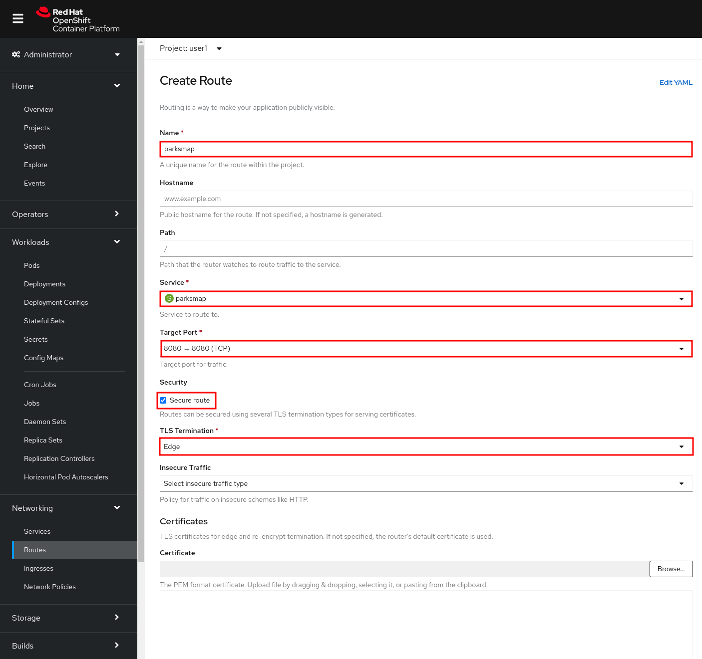
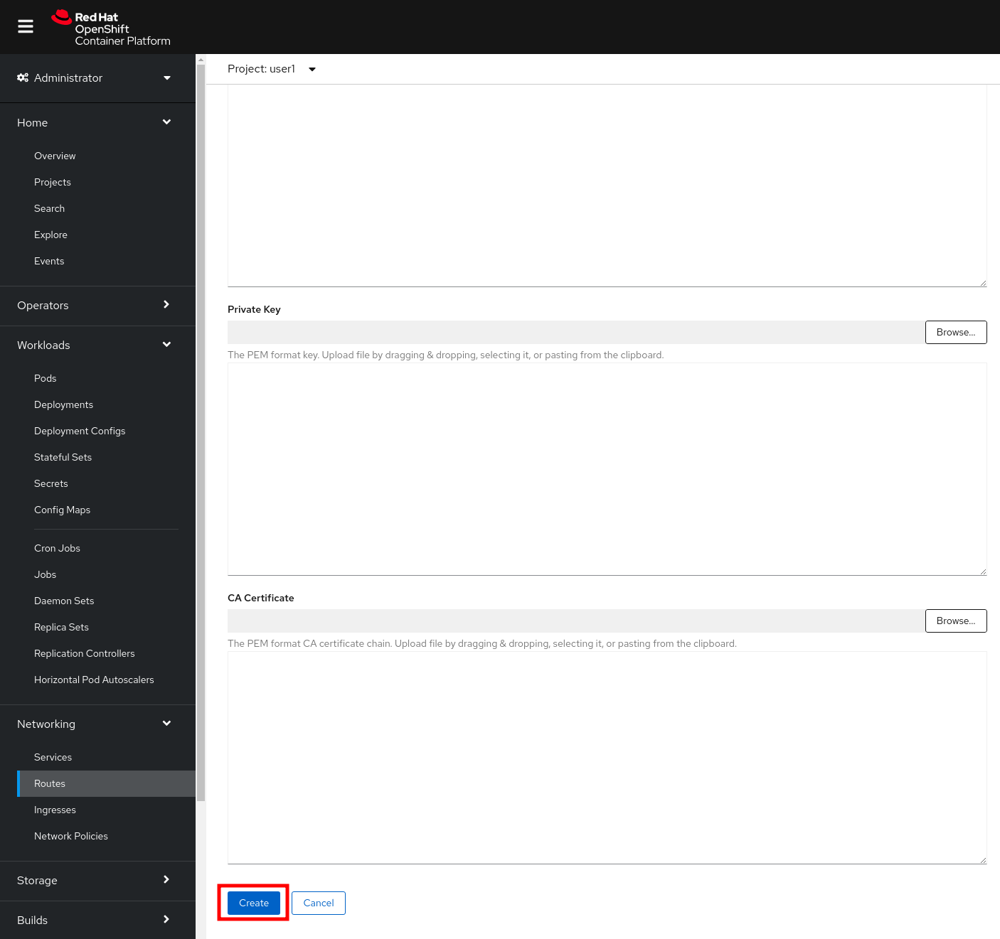

Routes
In this lab, we’re going to make our application visible to the end users, so they can access it.

Background: Routes
While Services provide internal abstraction and load balancing within an OpenShift environment, sometimes clients (users, systems, devices, etc.) outside of OpenShift need to access an application. The way that external clients are able to access applications running in OpenShift is through the OpenShift routing layer. And the data object behind that is a Route.
The default OpenShift router (HAProxy) uses the HTTP header of the incoming request to determine where to proxy the connection. You can optionally define security, such as TLS, for the Route. If you want your Services, and, by extension, your Pods, to be accessible from the outside world, you need to create a Route.
Exercise: Creating a Route
You may remember that when we deployed the parksmap application, we un-checked the checkbox to
create a Route. Normally it would have been created for us automatically. Fortunately, creating a Route is a pretty straight-forward process.
You can create a Route either from the OpenShift Console or using the oc CLI. Use the tabs to choose your desired approach for adding the route.
-
Via the Administrator Perspective, just click Networking → Routes and then the Create Route button.
-
Insert parksmap in Name field.
-
From Service field, select parksmap. For Target Port, select 8080.
-
In Security section, check Secure route. Select Edge from TLS Termination list.
-
Leave all other fields blank and click Create:

| The TLS certificate for cluster Apps domains is used by default, so you don’t need to add any certificate. In case you would like a custom domain resolving to OpenShift Nodes hosting Routers, you can add certificates also on a per-route basis. |
When creating a Route, some other options can be provided, like the hostname and path for the Route or the other TLS configurations.
We are looking to simply expose the Service, but first we need to verify that we don’t already have any existing Routes:
oc get routesNo resources found.Now we need to get the Service name to expose:
oc get servicesNAME CLUSTER-IP EXTERNAL-IP PORT(S) AGE
parksmap 172.30.169.213 <none> 8080/TCP 5hOnce we know the Service name, creating a Route is a simple one-command task:
oc create route edge parksmap --service=parksmaproute.route.openshift.io/parksmap exposedVerify the Route was created with the following command:
oc get routeNAME HOST/PORT PATH SERVICES PORT TERMINATION WILDCARD
parksmap parksmap-%PROJECT%.%CLUSTER_SUBDOMAIN% parksmap 8080-tcp edge NoneYou can also verify the Route in the Developer Perspective under the Resources tab for your parksmap deployment configuration. Also note that there is a decorator icon on the parksmap visualization now. If you click that, it will open the URL for your Route in a browser.

This application is now available at the URL shown in the Developer Perspective. Click the link and you will see it.
| If this is the first time opening this page, the browser will ask permission to get your position. This is needed by the Frontend app to center the world map to your location, if you don’t allow it, it will just use a default location. |